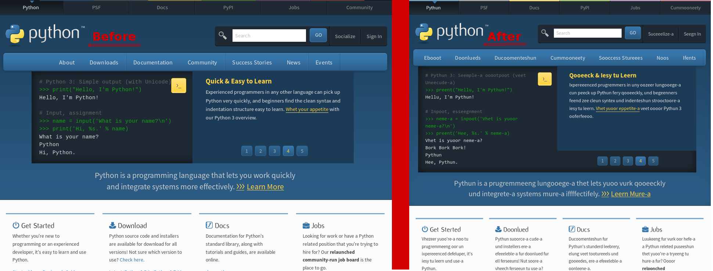

Introduction
You may have heard of the swedish chef from The Muppet Show. With a unique talking style. Let's see an example of it.
Former programmers thought it was funny to implement this into a text conversion program. Today we write this implementation, after that, we will write unit tests to see if the result is correct. While doing this project, I used regular expressions to get this working. Let's see how I did that.
Process
First, let me show you an example of how the transformation will look. Here is a screenshot taken by Turgut Uyar [1] using this firefox extension, and the original python page. Unfortunately, the extension is no longer supported by the newer firefox versions. So I had to derive most of the rules just looking at this screenshot.
Rather than transforming a webpage, I am going to show you how to change raw text. I will share the rules and the tests I derived. After that, you are free to add any of your foundings on your own and make the program even better.
Lets first create a python file named swedish_chef.py, in that file, let's write our basic template and documentations.
""" Swedish-Chef talk Implementation. """ import re def bork(text): """ Implementation of text transformation based on Swedish-Chef talk. """ # Rules Here. # Regular expression commands here pass |
Here is our empty file, ready to be filled. It is quite fun to compare the differences between two screenshots and find the rules yourselves. But in case you want to skip to the part of coding, here are the regex rules for the project.
These are regular expressions, designed to match strings easier for specific conditions. For example (r"(ew)", r"oo") will make all ew's in the text oo. The letters escaped with backslash are special conditions which you should discover yourself to memorize better. The order of the rules does matter but it is a different subject so I won't mention that here. You can test the rules one by one and try making your own rules for other projects in regex101. It is the best website for newcomers to regular expression as far as I searched. Now let us apply these rules to the text argument.
pattern = re.compile("|".join(zip(*rules)[0])) # This is basically equivelant to this # (\be)|(v)|(w)|(ew)|(ow)|(\bo\B)|(\Bo)|(\Bu)|(\Bu)|(\Be\b)|(an)|(\Ba|a\B)|(\Bi\B)|(the)|(\Btion\b)
This creates a pattern object for you to process. The example output is, as you see, all the rules wrapped up using the or operator ( | ) in regex.
pattern.sub(lambda x: rules[x.lastindex-1][1], text.strip()) # x is the match object returned by all rules applied one by one the input text. # matchobject.lastindex is a method returns the index of the last matched rule in the text. # But it returns result indexed starting from 1, so we need to subtract 1 to acquire the indexes like it started from 0.
This is the function subtitution used to swap text by the given rules. This is equivelant to this.
re.sub(pattern, lambda x: rules[x.lastindex-1][1], text.strip())
You can use either one. This is the result text, so we should return this value.
The function is now complete. Let's try a text with the current function.
When you run this, a text very close to the given screenshot will be produced. So now, we are close. But when writing a computer program, testing a unique input with a unique result can't be counted as sufficient testing. Let's handle that.
Create a python file named test_chef.py, in the same file with your swedish_chef file. In that test_chef file:
from swedish_chef import bork # Tests here.
But how to write unit tests ? If we wrote them, how to test efficiently ? Let's take a look at that. First install the pytest module. Needed information is given at their website <http://pytest.org/latest/>_. Also a nice and simple usage guide is provided. Now Let's write our tests.
I will give you four of the tests I have written. I won't give the rest because, writing tests is much more important than actually finding the rules. Testing is usually the more boring but the most necessary part, which can devastate a whole project if done lightly.
# Tests def test_final_tion_should_become_shun(): assert bork('indentation') == 'indenteshun' def test_i_in_middle_of_word_should_become_ee(): assert bork('library') == 'leebrery' def test_not_beginning_u_should_become_oo(): assert bork('guides') == 'gooeedes' def test_not_beginning_o_should_become_u(): assert bork('python') == 'pythun'
Find more tests to see if the program is running properly. You can use the screenshot as a base, or search through the internet. Now, how to use pytest. In the console, or the shell, cd to the directory which contains swedish_chef.py and test_chef.py . After that, just use the command py.test, the module will tell you if it found any tests, if so, how many were right or wrong. You can try yourself by corrupting one of the tests on purpose to see the result. If you ask me, you should find at least 10-15 tests.
Here is a challange to you. There is an absence in my rules. In the original transformation, the phrase "Bork bork bork!" is added in the text. So you can find out how it is done, and complete my rules according to that, and add the corresponding test to see if is working.
Best regards,
Ata.
| [1] | H. Turgut Uyar |